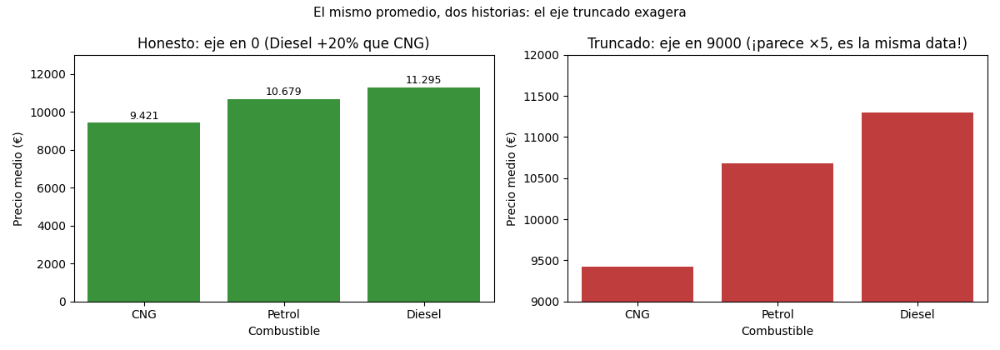

Unidad 3 · Visualización de datos · Lección 0011
El eje truncado miente: foco sin perder contexto
Win de hoy: ver cómo el mismo promedio (diésel 11.295 € vs CNG 9.421 €) parece +20 % o ×5 según dónde arranque el eje, y aprender cuándo truncar sí vale.
1 · El problema de la presentación: foco y contexto
Todo gráfico negocia entre foco (el detalle: ¿cuánto más vale el diésel?) y contexto (el marco: ¿20 % es mucho o poco?). Acercar el foco ayuda a ver… hasta que deforma. El caso clásico: truncar el eje de un gráfico de barras.
2 · La demo: +20 % que parece ×5
Precio medio real: diésel 11.295 €, nafta 10.679 €, CNG 9.421 €. El diésel supera al CNG en (11.295 − 9.421) / 9.421 = 19,9 %. Con el eje en 0, las barras muestran eso: una diferencia visible pero modesta. Pero si el eje arranca en 9.000, la barra del diésel mide 2.295 píxeles contra 421 del CNG: 5,45 veces más larga. Misma data, dos historias: el ojo compara largos, y el truncado le miente.
med = df.groupby("Fuel_Type")["Price"].mean()
ax.set_ylim(0, 13000) # honesto: el largo es proporcional
ax.set_ylim(9000, 12000) # truncado: exagera ×5,43 · ¿Truncar está prohibido? No: depende de qué compare el ojo
- Barras y tortas: no truncar. Comparan largo y área contra el 0; sin 0, la proporción se rompe.
- Líneas y scatters: suele valer. Comparan posición, no largo desde 0. La línea de precio por año (0009) puede arrancar en 8.000 sin mentir: nadie mide el largo hasta el piso.
- Si truncás, avisá. Eje visible, rotulado, y —mejor— mostrar el contexto al lado (como la figura de hoy: honesto vs truncado juntos).
4 · Figura: la misma data, dos honestidades

Regenerar la figura (mismo resultado versionado en assets/img/toyota/):
python scripts/make_figures.py --only eje-truncado-honestidad5 · Quiz (auto-chequeo inmediato)
6 · Fuente primaria y cierre
Para profundizar (1 fuente): Cairo, The Truthful Art — capítulos de honestidad visual y manipulación con ejes y escalas (thefunctionalart.com, también en RESOURCES.md del curso).
¿Algo no quedó claro? Preguntame al agente: cuándo tu gráfico necesita el 0, cómo mostrar foco y contexto juntos, o si tu conclusión sobrevive al eje honesto. Esa pregunta vale más que releer.